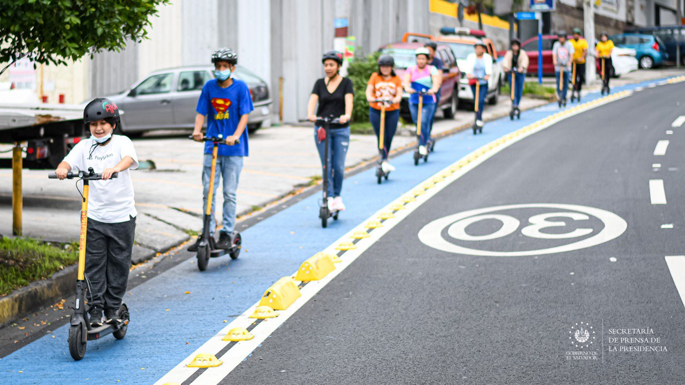
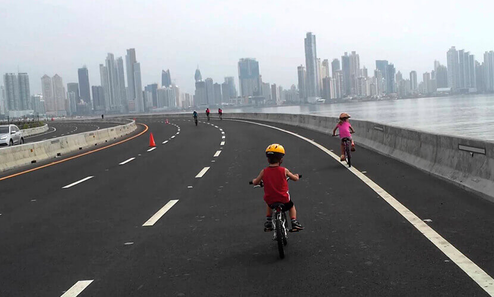

La
implementación de ciclo
vías en espacios necesitados
En la actualidad el
transporte de los vehículos pequeños como las motos o bicicletas
resulta
difícil, debido a que los espacios para que estos puedan transitar son
pocos
pensando en ello la implementación de ciclo vía podría ser una
oportunidad para
los mismos. Porque de
aquella forma son un beneficio para la comunidad por el ahorro en
transporte y
tiempo recorrido de un punto [A] a punto [B] en la Ciudad de Panamá. Al
mismo tiempo es un
aporte al medio ambiente ya que al resultar más factible para los
individuos
dentro de una sociedad (en este aspecto diremos que una comunidad
cerrada, por
decir algo, Bella Vista) logran disminuir el % de gases de efecto
invernadero.

Movilizarse en bicicleta tiene múltiples e inmensos beneficios, tanto
en la salud física y mental de cada ciclista como en el medioambiente,
el tránsito y la sociedad en sí misma, razones más que suficientes por
las que en América, el ciclismo y el uso de bicicletas en general está
cobrando un desarrollo verdaderamente excepcional. En este sentido, y
como no podía ser de otra manera, Panamá no ha sido la excepción y las
medidas tomadas por las autoridades encabezan el apogeo de las dos
ruedas y el transporte inteligente en la región, apostando fuertemente
al desarrollo de ciclovias y otros espacios donde el ciclismo prevalece.
Antes y durante la pandemia del COVID-19
En
América Latina y el Caribe, las ciudades no se caracterizan por contar
con una distribución eficiente ni equitativa del espacio público. Las
calles están congestionadas y se sigue subsidiando generosamente la
gasolina. Aun cuando algunas ciudades han intentado recuperar espacio
para el peatón y el ciclista, queda trabajo por hacer. Las
medidas para contener el avance del nuevo coronavirus han provocado el
cierre de establecimientos y la cancelación de eventos sociales. Con el
distanciamiento físico, el uso del transporte público se disminuyó a
niveles bajísimos, algunos proveedores de micromovilidad (medios
de transporte eléctrico pequeños, ligeros y de baja velocidad,
utilizados para distancias cortas) interrumpieron sus operaciones y los
viajes de “ridesharing” se
desplomaron. El tráfico vehicular privado cayó estrepitosamente y los
cotizados estacionamientos están vacíos, receta perfecta para reclamar
espacios en nuestras ciudades.
3 beneficios de tener una ciclovía en tu comunidad
- Mejores
espacios públicos:
El disminuir el uso del automóvil y sustituirlo por el de las
bicicletas permite que la vida pase a otra velocidad. Los niños pueden
jugar en las calles, las personas pueden transportarse sin riesgo y por
lo tanto puedan habitar de mejor manera los espacios públicos. Reducen
el ruido y la contaminación además de mejorar la movilidad de la zona
debido a que es un medio de transporte equitativo, es decir que es
accesible para todas las edades y a través de todos los grupos sociales.
- Ayuda
a la economía local:
Muchos estudios han comprobado que los ciclistas consumen más en
comercios locales que los usuarios de automóvil. Esto se debe a que al
ir manejando existen dos factores que disminuyen el consumo, la
velocidad y el estacionamiento. Al ir demasiado rápido es muy difícil
percibir la existencia de algún negocio o servicio, y por no contar con
un espacio lo suficientemente grande para dejar tu automóvil con la
proximidad deseada al comercio en cuestión se pierden clientes. Esta
situación no sucede con los ciclistas dado a que la velocidad moderada
les permite percibir de mejor manera los espacios por donde transitan,
invitándolos a pasar tiempo en ellos.
- Beneficios
para el gobierno: El
uso de la bicicleta es en sí un ejercicio, esto mejora la calidad de
vida y reduce la incidencia en hospitales por problemas de salud
relacionados al peso. Además de esto disminuye los accidentes viales,
siendo este uno de los mayores riesgos de medios de transporte como los
autos. Además, con los ciclistas se implementa el concepto Eyes on the street, es decir, donde hay gente los
espacios son más seguros, disminuyendo así los índices de criminalidad
en cualquier lugar.
Ciclovias en Panamá

al dar clic podra ver las ciclovias en Panamá